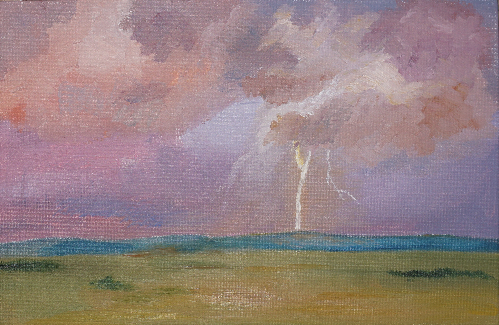
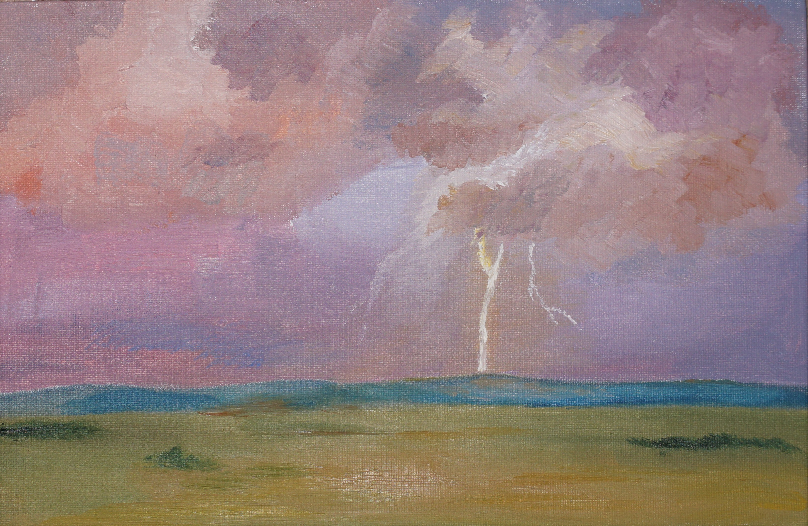
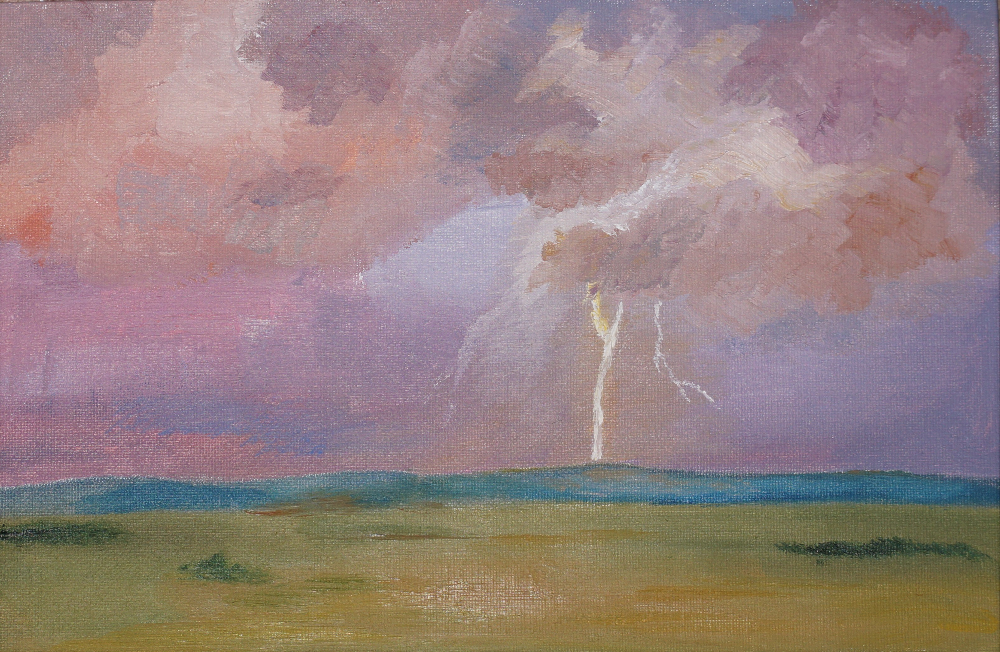

Галерея
Обо мне
Радость и гроза

16.09.22 Холст на картоне 20х30, масло
Эта яркая работа сильно отличается от предыдущей. Лето было насыщенно интересными
событиями, его не хотелось отпускать. Ландшафт напоминает степи Хакасии с
виднеющимися вдали голубыми горными вершинами. Вспышка молнии в свете летнего
заката озаряет все вокруг. Контрастные и, возможно, неестественно насыщенные цвета,
выбор которых вызван теплыми воспоминаниями о прошедшем лете.
На холсте изображено все, что я так люблю. Гроза, Хакасия и летние закаты.
 

 16.09.22 Холст на картоне 20х30, масло
Эта яркая работа сильно отличается от предыдущей. Лето было насыщенно интересными
16.09.22 Холст на картоне 20х30, масло
Эта яркая работа сильно отличается от предыдущей. Лето было насыщенно интересными